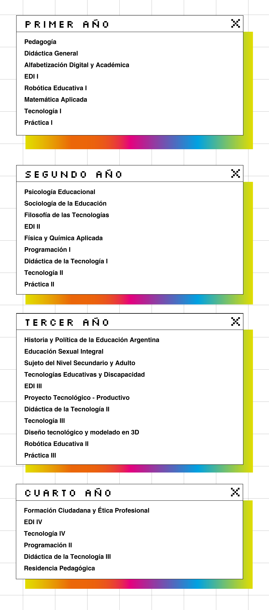

Requisitos de Inscripción
Fotocopias autenticadas por la policía de: partida Nacimiento y DNI.
Fotocopia del título secundario con copia fiel del original.
Constancia de título en trámite (validez 60 días).
Ficha Clínica CGE.
Constancia de CUIL.
Ficha de Inscripción.
Perfil del Egresado:
El Profesorado se orienta a la formación de un profesional que pueda:
Planificar y evaluar procesos de enseñanza en disciplinas tecnológicas.
Integrar equipos interdisciplinarios para proyectos educativos y curriculares.
Asesorar en temas curriculares e institucionales.
Desarrollar prácticas docentes contextualizadas.
Diseñar proyectos vinculados a la orientación educativa tecnológica.
Participar en actividades de perfeccionamiento en tecnologías.

Estructura Curricular
